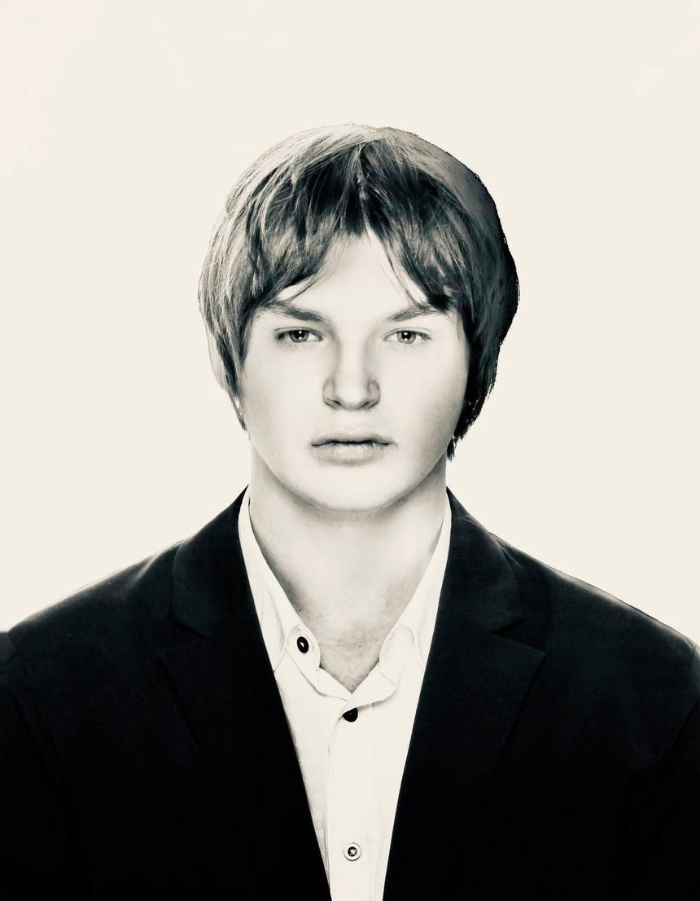

Nikolai Sus
дизайнер интерфейсов
Петербург
нажмите в любом месте

обо мне
Дизайнер интерфейсов, магистрант СПбГУ.
Ищу стажировку или первую работу
Коммерческого опыта пока нет — есть учебные и личные проекты, они собраны на этом сайте. Готов работать за опыт, учиться и разбираться, как профессия устроена изнутри.
Начинаю с людей: разговариваю с покупателями, разбираю сайты и только потом рисую.
Сейчас осваиваю TouchDesigner и 3D в браузере — этот сайт собран на three.js.
концепт · 2026 · кейс в работе
Концепт редизайна сайта петербургского магазина пластинок. Сделан для портфолио, не по заказу магазина.
Кейс с результатами теста появится здесь.
исследование · сентябрь 2026
Вопрос: как читатели находят книги и что им нужно от сайтов и соцсетей независимых книжных.
Сила независимых книжных — люди и вкус, но онлайн их почти не видно: цену не объясняет ни один магазин из шести, а выбрать книги по автору можно только у одного.
эксперимент · 2026
Десятки тысяч травинок считаются прямо в браузере: three.js и свой шейдер ветра. Курсор раздвигает траву, а ветер дует с той же силой и с той же стороны, что сейчас в Петербурге. Облака плывут туда же. Сверху видно, что луг стоит у моря.
Кнопка «пейзаж» внизу справа переносит на горное плато: наползает туман, а когда он уходит — внизу долина с озером и горы вокруг. Рельеф строится из шума прямо в браузере.
Если ничего не трогать пять минут, на траву прилетит божья коровка.
Данные о ветре — Open-Meteo.com, лицензия CC BY 4.0.
скоро
Здесь появятся мои работы в TouchDesigner.